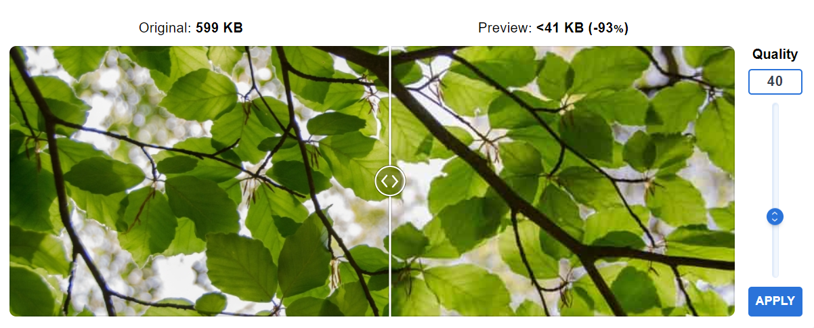

Na het gebruik van imagecompressor.com merkte ik op dat er een duidelijke degradatie was van de kwaliteit bij het comprimeren naar een kleiner bestand.
Zoals je kunt zien bij mijn eerste poging, heb ik de kwaliteit verlaagd naar 40, waarbij pixels al redelijk zichtbaar worden.
Bij mijn tweede poging wilde ik zien of de pixels daadwerkelijk verminderden, dus verlaagde ik het naar 15.